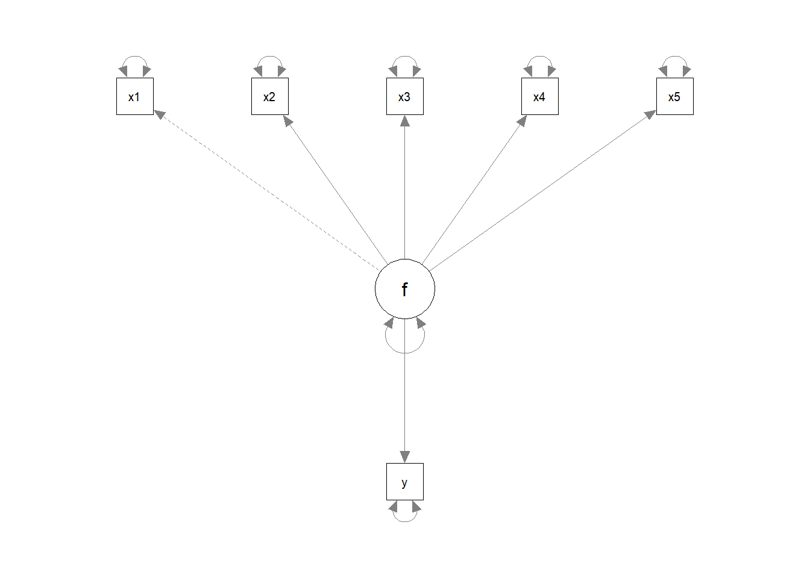
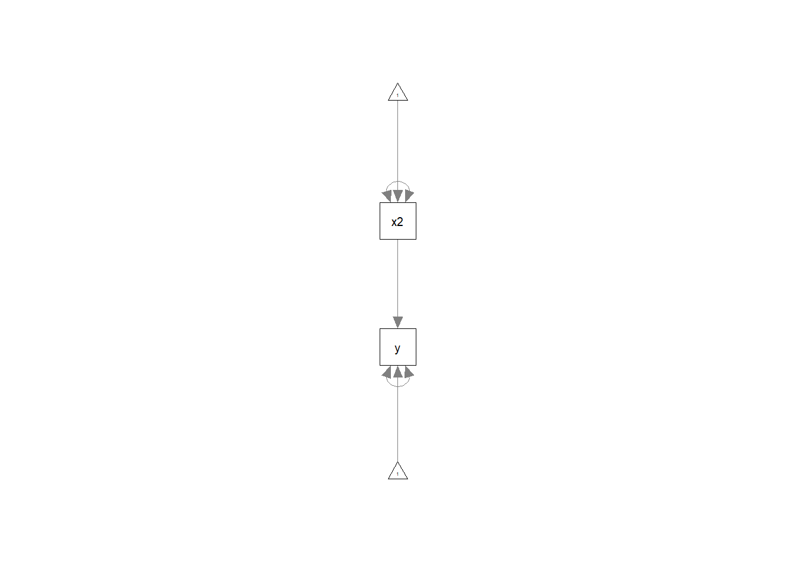
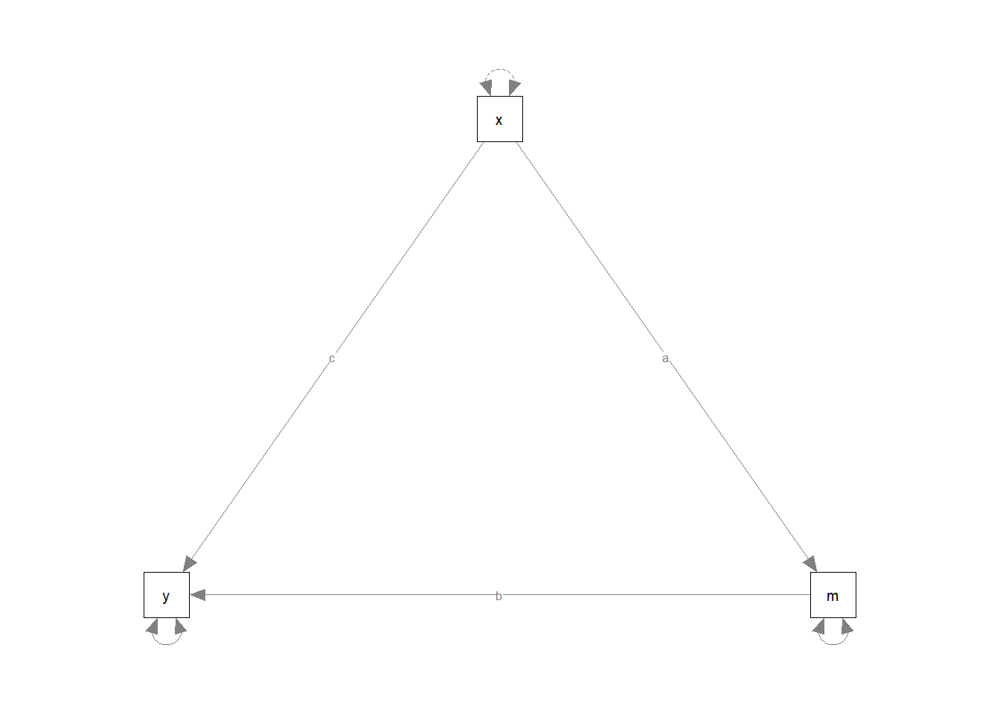
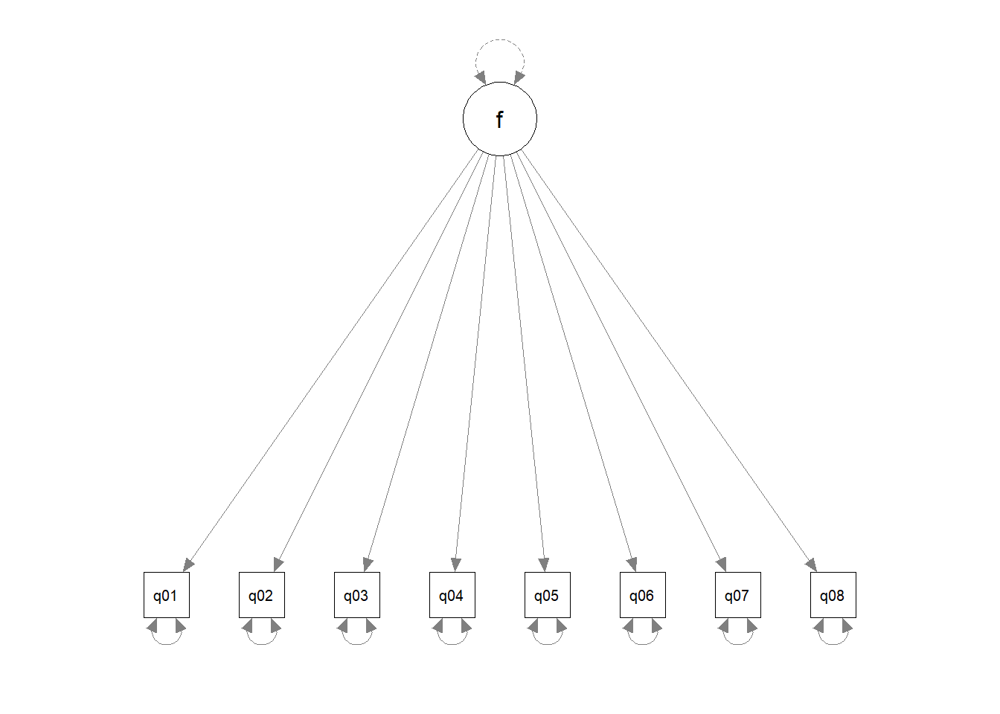

In this project, I tried SEM. .
Also, I referred many materials (see the readme file).
portfolio 8 for ds4p
main theme: Structure equation modeling
Reference1: https://quantdev.ssri.psu.edu/tutorials/structural-equation-modeling-r-using-lavaan
Reference2: https://stats.oarc.ucla.edu/r/seminars/rsem/
Reference3: https://www.ianruginski.com/post/sem_handout7/
Reference4: https://bookdown.org/bean_jerry/using_r_for_social_work_research/structural-equation-modeling.html
Reference5: https://www.lexjansen.com/wuss/2006/tutorials/TUT-Suhr.pdf
Source: in the readme file.
Structure Equation Modeling (SEM) analysis the network of relationship between the variables (including latent constructs, and measured variable ).
Unlike other conventional stat techniques, SES reqiures model specification( including measurement error specification)
SES is linear statistics technique, and do not provide causality test.
Keep in mind that SES do not provide default model. SEM has a powerful weapon- intuitive visulaization.
Goals 1) patterns of cov/cor among the variables 2) how much variance can be explianed by this specificed model.
library(lavaan)## Warning: package 'lavaan' was built under R version 4.1.3## This is lavaan 0.6-11
## lavaan is FREE software! Please report any bugs.library(tidyverse)## -- Attaching packages --------------------------------------- tidyverse 1.3.1 --## v ggplot2 3.3.6 v purrr 0.3.4
## v tibble 3.1.4 v dplyr 1.0.8
## v tidyr 1.2.0 v stringr 1.4.0
## v readr 2.1.2 v forcats 0.5.1## Warning: package 'ggplot2' was built under R version 4.1.3## Warning: package 'tidyr' was built under R version 4.1.3## Warning: package 'readr' was built under R version 4.1.3## Warning: package 'dplyr' was built under R version 4.1.3## -- Conflicts ------------------------------------------ tidyverse_conflicts() --
## x dplyr::filter() masks stats::filter()
## x dplyr::lag() masks stats::lag()library(psych)## Warning: package 'psych' was built under R version 4.1.3##
## Attaching package: 'psych'## The following objects are masked from 'package:ggplot2':
##
## %+%, alpha## The following object is masked from 'package:lavaan':
##
## cor2covlibrary(MASS)##
## Attaching package: 'MASS'## The following object is masked from 'package:dplyr':
##
## selectlibrary(mvnormalTest)## Warning: package 'mvnormalTest' was built under R version 4.1.3##
## Attaching package: 'mvnormalTest'## The following object is masked from 'package:psych':
##
## mardialibrary(semPlot)## Warning: package 'semPlot' was built under R version 4.1.3demo.model <- '
y ~ .5*f
f =~ .8*x1 + .8*x2 + .8*x3 + .8*x4 + .8*x5
x1 ~~ (1-.8^2)*x1
x2 ~~ (1-.8^2)*x2
x3 ~~ (1-.8^2)*x3
x4 ~~ (1-.8^2)*x4
x5 ~~ (1-.8^2)*x5
'
simData <- lavaan::simulateData(demo.model, sample.nobs=200)
# see the describtive stats
psych::describe(simData)## vars n mean sd median trimmed mad min max range skew kurtosis se
## x1 1 200 0.04 1.03 0.05 0.08 0.99 -2.97 2.81 5.79 -0.25 0.08 0.07
## x2 2 200 -0.04 1.10 -0.02 -0.02 1.14 -2.97 2.93 5.90 -0.11 0.01 0.08
## x3 3 200 0.06 1.06 0.12 0.09 0.98 -3.33 3.01 6.35 -0.28 0.51 0.07
## x4 4 200 0.02 1.10 0.08 0.02 1.23 -2.76 3.09 5.86 -0.04 -0.49 0.08
## x5 5 200 0.06 1.02 0.07 0.04 1.00 -2.66 2.53 5.19 0.11 -0.25 0.07
## y 6 200 0.00 1.08 0.02 0.02 1.18 -3.17 3.22 6.38 -0.11 0.04 0.08# multivariate nurmality test
mv<-mardia(simData)
mv## $mv.test
## Test Statistic p-value Result
## 1 Skewness 52.2847 0.6163 YES
## 2 Kurtosis 0.0416 0.9668 YES
## 3 MV Normality <NA> <NA> YES
##
## $uv.shapiro
## W p-value UV.Normality
## x1 0.9914 0.2829 Yes
## x2 0.9944 0.6621 Yes
## x3 0.9903 0.1956 Yes
## x4 0.9931 0.4722 Yes
## x5 0.9935 0.5307 Yes
## y 0.9958 0.8552 Yes#?simulateData
sim.cor <-cor(simData, use="pairwise.complete.obs", method="pearson")
sim.cor## x1 x2 x3 x4 x5 y
## x1 1.0000000 0.7111977 0.7016938 0.6912733 0.6421563 0.3532336
## x2 0.7111977 1.0000000 0.7100584 0.6924437 0.6727274 0.3796734
## x3 0.7016938 0.7100584 1.0000000 0.6722241 0.7182953 0.3118240
## x4 0.6912733 0.6924437 0.6722241 1.0000000 0.6692418 0.2807331
## x5 0.6421563 0.6727274 0.7182953 0.6692418 1.0000000 0.2970388
## y 0.3532336 0.3796734 0.3118240 0.2807331 0.2970388 1.0000000tofit.model <- '
y ~ f
f =~ x1+ x2 + x3 + x4 + x5
x1 ~~ x1
x2 ~~ x2
x3~~x3
x4~~x4
x5~~x5
'
tofit.model_m <- sem(tofit.model, simData)
summary(tofit.model_m, fit.measures=T)## lavaan 0.6-11 ended normally after 22 iterations
##
## Estimator ML
## Optimization method NLMINB
## Number of model parameters 12
##
## Number of observations 200
##
## Model Test User Model:
##
## Test statistic 9.912
## Degrees of freedom 9
## P-value (Chi-square) 0.358
##
## Model Test Baseline Model:
##
## Test statistic 710.250
## Degrees of freedom 15
## P-value 0.000
##
## User Model versus Baseline Model:
##
## Comparative Fit Index (CFI) 0.999
## Tucker-Lewis Index (TLI) 0.998
##
## Loglikelihood and Information Criteria:
##
## Loglikelihood user model (H0) -1423.811
## Loglikelihood unrestricted model (H1) -1418.854
##
## Akaike (AIC) 2871.621
## Bayesian (BIC) 2911.201
## Sample-size adjusted Bayesian (BIC) 2873.184
##
## Root Mean Square Error of Approximation:
##
## RMSEA 0.023
## 90 Percent confidence interval - lower 0.000
## 90 Percent confidence interval - upper 0.085
## P-value RMSEA <= 0.05 0.695
##
## Standardized Root Mean Square Residual:
##
## SRMR 0.020
##
## Parameter Estimates:
##
## Standard errors Standard
## Information Expected
## Information saturated (h1) model Structured
##
## Latent Variables:
## Estimate Std.Err z-value P(>|z|)
## f =~
## x1 1.000
## x2 1.094 0.076 14.333 0.000
## x3 1.050 0.073 14.335 0.000
## x4 1.055 0.078 13.538 0.000
## x5 0.968 0.072 13.395 0.000
##
## Regressions:
## Estimate Std.Err z-value P(>|z|)
## y ~
## f 0.498 0.090 5.559 0.000
##
## Variances:
## Estimate Std.Err z-value P(>|z|)
## .x1 0.326 0.041 7.993 0.000
## .x2 0.341 0.044 7.702 0.000
## .x3 0.314 0.041 7.700 0.000
## .x4 0.408 0.050 8.218 0.000
## .x5 0.358 0.043 8.294 0.000
## .y 0.977 0.099 9.838 0.000
## f 0.723 0.103 7.042 0.000inspect(tofit.model_m)## $lambda
## f y
## x1 0 0
## x2 2 0
## x3 3 0
## x4 4 0
## x5 5 0
## y 0 0
##
## $theta
## x1 x2 x3 x4 x5 y
## x1 6
## x2 0 7
## x3 0 0 8
## x4 0 0 0 9
## x5 0 0 0 0 10
## y 0 0 0 0 0 0
##
## $psi
## f y
## f 12
## y 0 11
##
## $beta
## f y
## f 0 0
## y 1 0semPlot::semPaths(tofit.model_m)
lavaan package’s notation
~ : predict (y~x: y is predicted by x)
=~ : indicator (latent variable =~ observed indicator)
~~ Covariance
~1: intercept or mean x~1 : mean of variable x
1* fixed parameter or loading to one
NA* frees parameter or loading
a*labels the parameter ‘a’ for model constraints
before going further, let’s try simple regression
hey<-lm(y~x2, simData)
summary(hey)##
## Call:
## lm(formula = y ~ x2, data = simData)
##
## Residuals:
## Min 1Q Median 3Q Max
## -3.2621 -0.6406 -0.0049 0.5680 2.8203
##
## Coefficients:
## Estimate Std. Error t value Pr(>|t|)
## (Intercept) 0.01557 0.07075 0.220 0.826
## x2 0.37167 0.06436 5.775 2.94e-08 ***
## ---
## Signif. codes: 0 '***' 0.001 '**' 0.01 '*' 0.05 '.' 0.1 ' ' 1
##
## Residual standard error: 0.9999 on 198 degrees of freedom
## Multiple R-squared: 0.1442, Adjusted R-squared: 0.1398
## F-statistic: 33.35 on 1 and 198 DF, p-value: 2.943e-08results interpretaion:
as one unit increase in x1, the y score improves approaximatly 0.508, and Significant. the residual standard error is 1.087. the residual variance is (1.087)^2 = 1.181569
This can be done by Lavaan packages
hey2<-'
y ~ 1 + x2
x2~~x2
'
hey2fit<-sem(hey2,data=simData)
summary(hey2fit)## lavaan 0.6-11 ended normally after 10 iterations
##
## Estimator ML
## Optimization method NLMINB
## Number of model parameters 5
##
## Number of observations 200
##
## Model Test User Model:
##
## Test statistic 0.000
## Degrees of freedom 0
##
## Parameter Estimates:
##
## Standard errors Standard
## Information Expected
## Information saturated (h1) model Structured
##
## Regressions:
## Estimate Std.Err z-value P(>|z|)
## y ~
## x2 0.372 0.064 5.804 0.000
##
## Intercepts:
## Estimate Std.Err z-value P(>|z|)
## .y 0.016 0.070 0.221 0.825
## x2 -0.038 0.078 -0.495 0.621
##
## Variances:
## Estimate Std.Err z-value P(>|z|)
## x2 1.207 0.121 10.000 0.000
## .y 0.990 0.099 10.000 0.000semPlot::semPaths(hey2fit)
results interpretaion:
the regression coifficient (0.508) is the same.
However, some difference is here. ML and OLS provide different residual variance but the same coefficients.
What is different between SEM and path analysis?
“SEM is a combination of multiple regression and factor analysis. Path analysis deals only with measured variables. two or more measured variables” (Source:https://theicph.com/wp-content/uploads/2016/09/How-to-conduct-Path-Analysis-and-SEM-for-Health-Research_24-Sep-2016_Prof-Bhisma-Murti.pdf) #### Data simulation
set.seed(1234)
x<-rnorm(100)
m<-0.5*x + rnorm(100)
y<-0.7*m + rnorm(100)
data <-data.frame(x=x,m=m,y=y)medmodel<-'
y~c*x
m~a*x
y~b*m
# indirect effect (a*b)
ab:=a*b
# total effect
total:=c+(a*b)
'medmodel_m<-sem(medmodel, data=data)
summary(medmodel_m, fit.measures=T)## lavaan 0.6-11 ended normally after 1 iterations
##
## Estimator ML
## Optimization method NLMINB
## Number of model parameters 5
##
## Number of observations 100
##
## Model Test User Model:
##
## Test statistic 0.000
## Degrees of freedom 0
##
## Model Test Baseline Model:
##
## Test statistic 84.319
## Degrees of freedom 3
## P-value 0.000
##
## User Model versus Baseline Model:
##
## Comparative Fit Index (CFI) 1.000
## Tucker-Lewis Index (TLI) 1.000
##
## Loglikelihood and Information Criteria:
##
## Loglikelihood user model (H0) -281.061
## Loglikelihood unrestricted model (H1) -281.061
##
## Akaike (AIC) 572.122
## Bayesian (BIC) 585.148
## Sample-size adjusted Bayesian (BIC) 569.357
##
## Root Mean Square Error of Approximation:
##
## RMSEA 0.000
## 90 Percent confidence interval - lower 0.000
## 90 Percent confidence interval - upper 0.000
## P-value RMSEA <= 0.05 NA
##
## Standardized Root Mean Square Residual:
##
## SRMR 0.000
##
## Parameter Estimates:
##
## Standard errors Standard
## Information Expected
## Information saturated (h1) model Structured
##
## Regressions:
## Estimate Std.Err z-value P(>|z|)
## y ~
## x (c) 0.036 0.104 0.348 0.728
## m ~
## x (a) 0.474 0.103 4.613 0.000
## y ~
## m (b) 0.788 0.092 8.539 0.000
##
## Variances:
## Estimate Std.Err z-value P(>|z|)
## .y 0.898 0.127 7.071 0.000
## .m 1.054 0.149 7.071 0.000
##
## Defined Parameters:
## Estimate Std.Err z-value P(>|z|)
## ab 0.374 0.092 4.059 0.000
## total 0.410 0.125 3.287 0.001semPaths(medmodel_m)
load the data
library(foreign)
dat <- read.spss("https://stats.idre.ucla.edu/wp-content/uploads/2018/05/SAQ.sav",
to.data.frame=TRUE, use.value.labels = FALSE)## re-encoding from UTF-8head(dat,10)## q01 q02 q03 q04 q05 q06 q07 q08 q09 q10 q11 q12 q13 q14 q15 q16 q17 q18 q19
## 1 2 1 4 2 2 2 3 1 1 2 1 2 2 2 2 3 1 2 3
## 2 1 1 4 3 2 2 2 2 5 2 2 3 1 3 4 3 2 2 3
## 3 2 3 2 2 4 1 2 2 2 2 3 3 2 4 2 3 2 3 1
## 4 3 1 1 4 3 3 4 2 2 4 2 2 2 3 3 3 2 4 2
## 5 2 1 3 2 2 3 3 2 4 2 2 3 3 2 2 2 2 3 3
## 6 2 1 3 2 4 4 4 2 4 3 2 4 3 3 5 2 3 5 1
## 7 2 3 3 2 2 2 2 2 3 2 2 2 2 2 2 2 2 2 3
## 8 2 2 3 2 2 2 2 2 4 2 2 3 2 2 3 2 2 2 4
## 9 3 3 1 4 5 3 5 5 3 3 5 5 5 5 5 5 5 5 2
## 10 2 4 4 3 2 1 2 2 3 2 2 3 2 1 2 3 2 2 3
## q20 q21 q22 q23
## 1 2 2 2 5
## 2 4 4 4 2
## 3 4 3 2 2
## 4 4 4 4 3
## 5 4 2 4 4
## 6 5 3 1 4
## 7 2 2 4 4
## 8 3 2 4 4
## 9 5 5 3 3
## 10 3 2 4 48 items, with one factor
cfa<- '
f =~ q01 + q02 + q03 + q04 + q05 + q06 + q07 + q08'
cfa8<- cfa(cfa, data=dat, std.lv=TRUE)
#std.lv=T automatically standardize the variance.
summary(cfa8, fit.measures=T, standardized=T)## lavaan 0.6-11 ended normally after 15 iterations
##
## Estimator ML
## Optimization method NLMINB
## Number of model parameters 16
##
## Number of observations 2571
##
## Model Test User Model:
##
## Test statistic 554.191
## Degrees of freedom 20
## P-value (Chi-square) 0.000
##
## Model Test Baseline Model:
##
## Test statistic 4164.572
## Degrees of freedom 28
## P-value 0.000
##
## User Model versus Baseline Model:
##
## Comparative Fit Index (CFI) 0.871
## Tucker-Lewis Index (TLI) 0.819
##
## Loglikelihood and Information Criteria:
##
## Loglikelihood user model (H0) -26629.559
## Loglikelihood unrestricted model (H1) -26352.464
##
## Akaike (AIC) 53291.118
## Bayesian (BIC) 53384.751
## Sample-size adjusted Bayesian (BIC) 53333.914
##
## Root Mean Square Error of Approximation:
##
## RMSEA 0.102
## 90 Percent confidence interval - lower 0.095
## 90 Percent confidence interval - upper 0.109
## P-value RMSEA <= 0.05 0.000
##
## Standardized Root Mean Square Residual:
##
## SRMR 0.055
##
## Parameter Estimates:
##
## Standard errors Standard
## Information Expected
## Information saturated (h1) model Structured
##
## Latent Variables:
## Estimate Std.Err z-value P(>|z|) Std.lv Std.all
## f =~
## q01 0.485 0.017 28.942 0.000 0.485 0.586
## q02 -0.198 0.019 -10.633 0.000 -0.198 -0.233
## q03 -0.612 0.022 -27.989 0.000 -0.612 -0.570
## q04 0.632 0.019 33.810 0.000 0.632 0.667
## q05 0.554 0.020 28.259 0.000 0.554 0.574
## q06 0.554 0.023 23.742 0.000 0.554 0.494
## q07 0.716 0.022 32.761 0.000 0.716 0.650
## q08 0.424 0.018 23.292 0.000 0.424 0.486
##
## Variances:
## Estimate Std.Err z-value P(>|z|) Std.lv Std.all
## .q01 0.450 0.015 30.734 0.000 0.450 0.656
## .q02 0.685 0.019 35.300 0.000 0.685 0.946
## .q03 0.780 0.025 31.157 0.000 0.780 0.675
## .q04 0.499 0.018 27.989 0.000 0.499 0.555
## .q05 0.623 0.020 31.040 0.000 0.623 0.670
## .q06 0.951 0.029 32.711 0.000 0.951 0.756
## .q07 0.702 0.024 28.678 0.000 0.702 0.578
## .q08 0.581 0.018 32.849 0.000 0.581 0.764
## f 1.000 1.000 1.000semPaths(cfa8)
interpretaion
round(cor(dat[,1:8]),2)## q01 q02 q03 q04 q05 q06 q07 q08
## q01 1.00 -0.10 -0.34 0.44 0.40 0.22 0.31 0.33
## q02 -0.10 1.00 0.32 -0.11 -0.12 -0.07 -0.16 -0.05
## q03 -0.34 0.32 1.00 -0.38 -0.31 -0.23 -0.38 -0.26
## q04 0.44 -0.11 -0.38 1.00 0.40 0.28 0.41 0.35
## q05 0.40 -0.12 -0.31 0.40 1.00 0.26 0.34 0.27
## q06 0.22 -0.07 -0.23 0.28 0.26 1.00 0.51 0.22
## q07 0.31 -0.16 -0.38 0.41 0.34 0.51 1.00 0.30
## q08 0.33 -0.05 -0.26 0.35 0.27 0.22 0.30 1.00q 02, it is only -.23. If we see the corr table, also can find that q02 is weakly associated with other questions. q03,